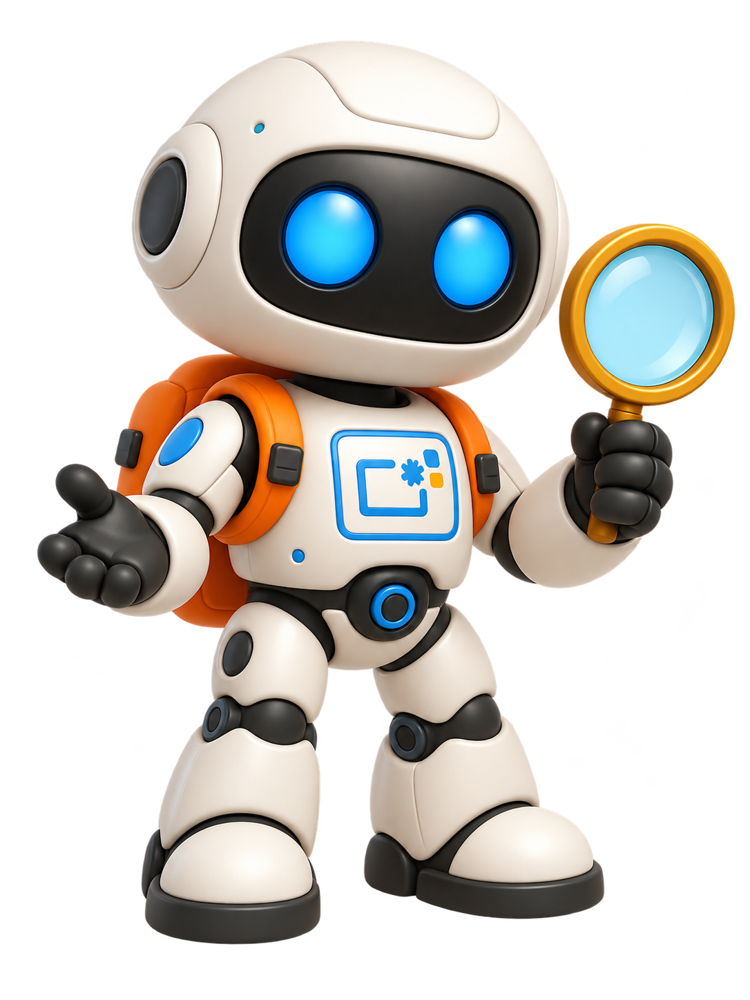
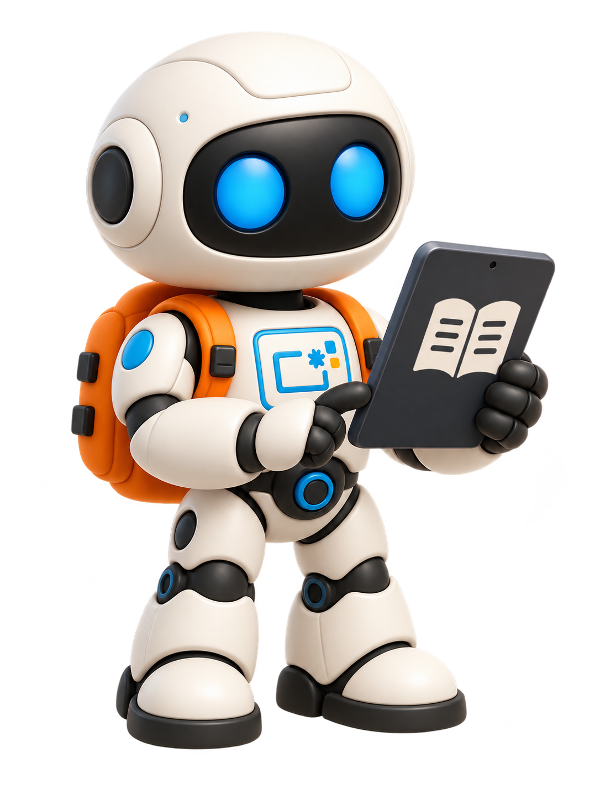

Recursos educativos
Roboteca
Materiales de robótica educativa, programación y pensamiento computacional para usar en el centro y en el aula.
Un espacio para descubrir, compartir y aplicar recursos educativos digitales con sentido pedagógico en Educación Infantil y Primaria.

Materiales de robótica educativa, programación y pensamiento computacional para usar en el centro y en el aula.
Guías, tutoriales, e-books y materiales prácticos sobre Canva, inteligencia artificial y otras herramientas educativas.
Un entorno para recoger experiencias, propuestas y recursos que ayuden a enriquecer la práctica docente del centro.
Un espacio para descubrir, explorar y poner en práctica los materiales de robótica del centro de forma sencilla, útil y conectada con el aula.

Materiales del centro para iniciación a la programación, pensamiento computacional y robótica educativa.
Recursos para crear, experimentar y aprender con tecnología de manera creativa y manipulativa.
Guías y e-books prácticos para el profesorado.
Próximamente: Canva e inteligencia artificial.
